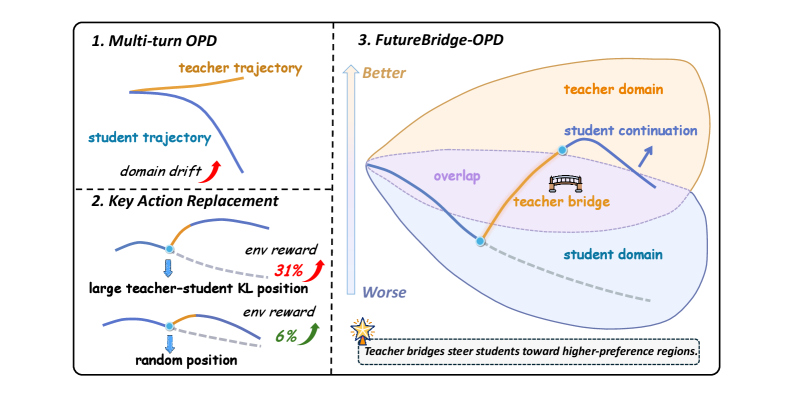
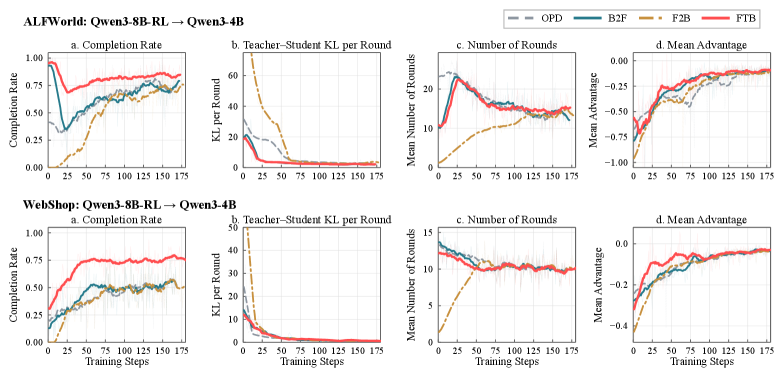
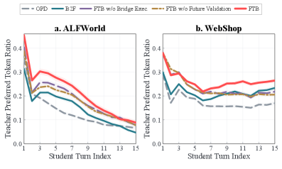
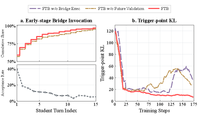

在线蒸馏（on-policy distillation, OPD）在student访问过的状态上提供教师监督，缩小训练与推理的分布差距。但在多轮agentic任务里，student的偏差会随时间不断累积，轨迹会逐渐漂移离开那些教师指导仍然有效的状态：错误沿交互链一路放大。
这篇工作提出的FutureBridge-OPD（FTB） 关键在于「向前看一步」：不是只看当前位置师生分歧大不大，而是在高分歧状态执行一小段教师桥（teacher bridge），再用诱导出的student续写去验证这段桥到底有没有用。在ALFWorld、WebShop、ScienceWorld上，它把平均成功率比vanilla OPD和TCOD分别提高了16.6和7.6分。
OPD相比静态蒸馏的关键优势是在student实际访问的状态上给监督，常被用于把大模型能力传给小模型（如Qwen3-32B → Qwen3-1.7B）。但对多轮agent任务，student的每一步都可能偏离教师，偏差沿交互链累积，越走越偏离教师指导仍有效的区域。
现有方法基本分两路：一路（如TCOD、Guided-OPD）用教师前缀、curriculum调度、自适应rollout深度来调节student接管；另一路用KL分歧、模型置信度或环境反馈来过滤、重加权蒸馏信号。

但两者都漏掉了同一个关键问题：教师的指导，能否真正把student的未来轨迹导向教师偏好更强的区域？只看当前位置，判断不了这一步干预对后续意味着什么。
论文先做了量化分析：取ALFWorld、WebShop、ScienceWorld上1000条失败轨迹，重放其历史前缀，在师生分歧大的位置把student action替换成教师action，再让agent继续跑。
结果印证了一个更细的图景：高分歧状态确实提供了有前景的干预机会：但并非每次都有效。判断一段教师指导有没有用，必须看它对后续student轨迹的影响，而不是仅仅看这一位的分歧度。
这正是FTB与「只用局部KL判断监督价值」的方法的根本分界：用未来轨迹验证，而非当前状态打分。
FTB的核心是一条三阶段的验证回路。第一步，在student的多轮rollout中识别出最大师生分歧的位置作为候选干预点（high-disagreement state）；第二步，在这个状态执行一小段短教师桥（teacher bridge）：先让教师接管几步；第三步，用这条bridge之后的student continuation（续写）去评估：相对教师，这段桥是否让student未来轨迹进入更稠密的正蒸馏信号区域。
只有通过了「未来轨迹验证」的教师桥，其对应的教师行为才会被纳入蒸馏训练；否则就不把这段引导当作有效监督。这相当于给每段高水平干预装了一个前瞻性的验收阀。
对比之下，FTB与仅看当前分歧的方法（包括TCOD之类的教师前缀接管）不同：它不默认教师做的就一定该学，而是证明它改变的未来路径确实更接近教师偏好才学。
主设置用Qwen3-32B当教师、Qwen3-1.7B当学生，在ALFWorld、WebShop、ScienceWorld三个多轮agent基准上跑三粒种子（mean ± std）。FTB平均成功率比vanilla OPD高16.6分、比TCOD-B2F高7.6分，稳居最佳。
换用RL训练过的教师（Qwen3-8B-RL → Qwen3-4B）结果依然领先，说明FTB不依赖特定教师类型：从SFT教师到RL教师都有效。

跨student规模和teacher设置的一致性，说明收益来自方法本身（未来轨迹验证），而不是凑某个设置。
FTB w/ Random Turn：把最大分歧turn换成随机turn：成功率明显回落，证明精准定位关键干预位置很关键，不是随便插手就行。
FTB w/o Bridge Exec：不在环境里执行teacher bridge，只靠比较分歧决定是否把教师动作纳入训练：也弱于完整FTB，说明真实执行桥、并看它改变的未来续写是信息增益的真正来源。

对horizon长度的敏感性（附录Table 9）用单seed也做了探测：选一个合理的未来验证视野是平稳、可操作的。

FTB给出一个朴素但不常被遵守的原则：别只看当前位置分歧大不大，要看这一步干预是否把学生带向教师真正偏好的未来。用教师桥 + 学生续写的「前瞻验证」来筛选监督信号，比用局部KL或教师前缀接管更稳、更可解释。
对训练agent型小模型（工具调用、多轮网页/环境交互）的团队，这套「干预前先问未来」的思路，是给既有OPD蒸馏管线注入更高信号质量、又几乎不改训练目标的一个轻量选择。
参考：https://arxiv.org/abs/2608.01953v1